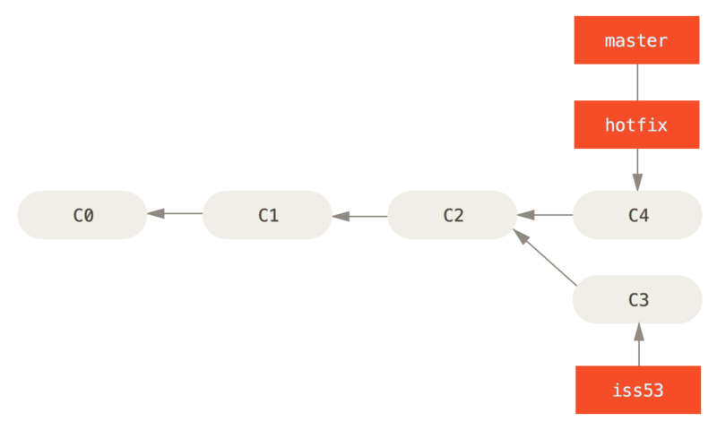

Git és GitHub - Ágak egyesítése
- Egy adott adattár (repository) esetén lehetőség van több ág (branch) egyesítésére. Ezt nevezzük merging-nek.
- Nézzük a következő példát. A C0 állapotból, pillanatfelvételből, véglegesítésből (commit) eljutottunk a C2 állapotba a master ágban.
-
Ekkor létrehozzuk az iss53 ágat
egyedi fejlesztésre. De előtte zárjuk le a
master ág minden véglegesítését,
azaz a munkakönyvtárat (working directory) és a színpadot (staging area)
ürítsük ki!
Ezt minden esetben tegyük meg!
git checkout -b iss53
Ekkor a HEAD mutató átkerül erre az ágra. - Dolgozzunk ezen az ágon, véglegesítünk néhányat. Ebben az esetben az állapot.
- Most hirtelen módosítani kell a master ágat. Zárjuk le az iss53 ágat! Hozzunk létre egy hotfix ágat, és hajtsuk végre a módosításokat. Ekkor:
-
Ha minden oké, akkor jön a lényeg. Egyesítsük a
master és
hotfix ágat. Ehhez lépjünk
vissza a master ágba.
git checkout master, majd
git merge hotfix

-
Látható, hogy a Git a
HEAD mutatót előre vitte (Fast-forward) a C4 véglegesítéshez. Töröljük a
hotfix ágat.
git branch -d hotfix
-
Lépjünk vissza az iss53 ágba és
folytassuk a megkezdett munkánk. Néhány véglegesítés után
szeretnénk összevonni a
master ággal.
git checkout master, majd
git merge iss53
- Ebben az esetben kicsit visszább kell menni mind a két ág esetében, egészen a C2 állapotig, és onnan kezdeni az egyesítést.
-
Három-utas egyesítés (three way commit): ekkor a C2, C3 és C5 commit lesz használva, hogy
létrejöjjön az új állapot C6. Ha kell törölhetjük a
iss53 ágat.
git branch -d hotfix
- Mi történik, ha konfliktus támad az egyesítés folyamán? Például, ha a két különböző ágban ugyanazt az állományt szerkesztettük. Ekkor a következőt kapjuk.
- A Git létrehoz egy egyesítő véglegesítést és vár a konfliktus feloldására. Futassuk a git status utasítást, hogy megtudjuk az okot.
- Nyissuk meg a vitatott állomámyt és javítsuk ki a hibát. Jegyzettömbben válasszuk ki a megfelelő lehetőséget, minden mást töröljünk.:
- Visual Studio Code-ban válasszunk a fenti négy lehetőségből.
- Majd a szoksásos utasítások. Figyeljük meg a (master) és (master|MERGING) váltakozást!
-
Ha a konfliktusfeloldáshoz grafikus felületet akarunk
használni, akkor hasznos lehet a következő utasítás:
git mergetool, vagy ha még nincs konfigurálva egy sem, akkor
git mergetool --tool-help
Leginkább javasolt az opendiff.git mergetool --tool=opendiff
Ágegyesítés - Merging: